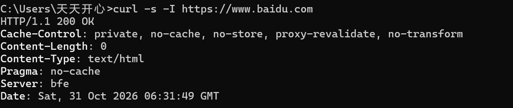
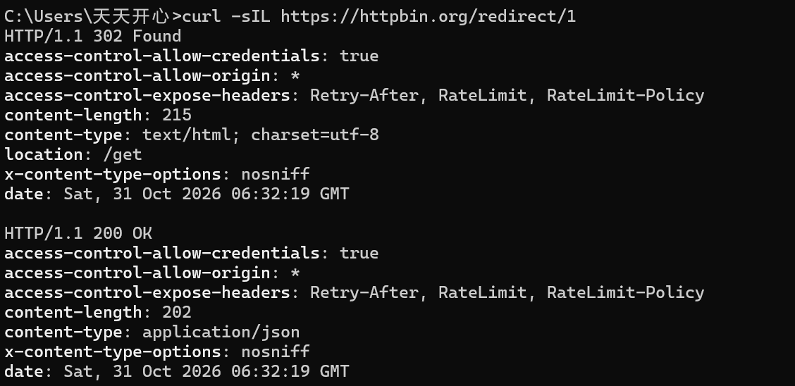
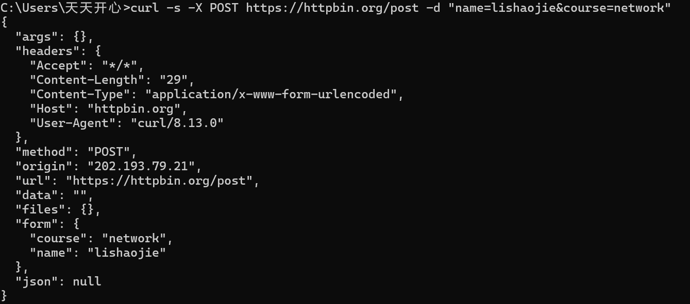
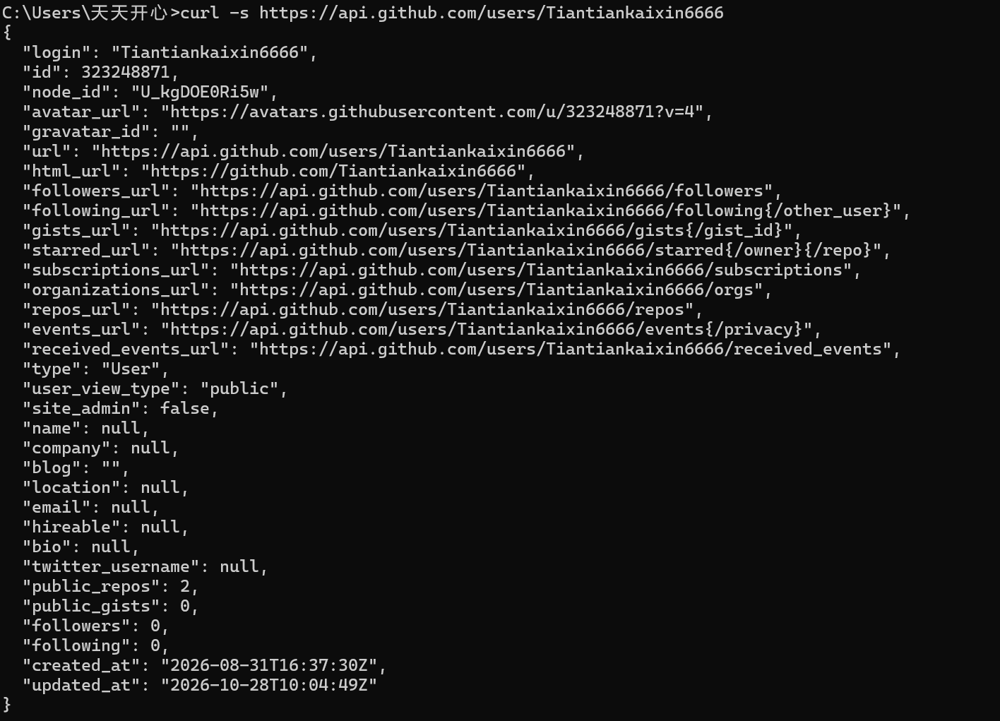
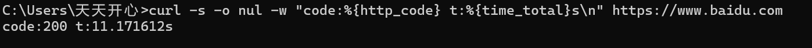

学网络协议时，HTTP 的"请求—响应"模型总感觉隔着一层。这次我决定用命令行工具 curl 亲手发几条真实请求，对着真实输出逐行读懂它——不做PPT式的罗列，每条命令都配了真实截图和解读。所有命令都在 Windows 自带的 cmd 里跑通（Win10/11 已内置 curl，无需安装）。
一、curl 是什么
curl 是一个命令行的 URL 数据传输工具，支持 HTTP/HTTPS 等一堆协议。说人话就是：你在黑窗口里敲一行命令，它替你完成 DNS 解析 → TCP 握手 → TLS 握手 → 发送 HTTP 请求 → 接收响应的整套流程，并把结果打印到屏幕上。浏览器做的事情它都在做，只是把"界面"去掉了——所以看 HTTP 最裸的样子，curl 比浏览器直观得多。
本次实测环境：Windows 11 自带 curl（从后面 POST 回显的 User-Agent 里能看到它的版本：curl/8.13.0），直接 cmd 开跑。
二、实操一：看响应头（-I）
第一条命令最常用：-s 表示静默模式（不显示进度条），-I 表示只取响应头（发的是 HEAD 请求，不要正文）：
curl -s -I https://www.baidu.com
逐行读这份输出，每个头都有含义：
HTTP/1.1 200 OK—— 状态行。200 是"成功"，这是最想看到的一行；Content-Type: text/html—— 响应体是 HTML 页面；Content-Length: 0—— 注意这里是 0！因为-I发的是 HEAD 请求，服务器只返回头、不返回正文，所以长度为 0。这是个容易困惑的点；Cache-Control: private, no-cache, ...—— 告诉浏览器（和中间代理）这份内容怎么缓存；Server: bfe—— bfe 是 Baidu Front End，百度自研的流量接入层，等于从响应头里"看穿"了对方用的服务器软件。
三、实操二：跟随重定向（-L）
有些网址会把你"踢"到另一个地址（301/302 跳转）。加 -L 让 curl 自动跟着跳，再配合 -I 就能看到完整的两跳：
curl -sIL https://httpbin.org/redirect/1
这张图把重定向机制拍得明明白白：
- 第一段：
HTTP/1.1 302 Found，关键在location: /get这个头——服务器说"内容不在这儿，去 /get 拿"； - 第二段：因为加了
-L，curl 没有停下来，而是自动向/get再发一次请求，这次拿到HTTP/1.1 200 OK，且content-type: application/json。
如果没有 -L，输出会停在 302 那一段——这也是调试"为什么浏览器能打开、脚本却拿不到数据"时最常见的原因。
四、实操三：发 POST 请求（-X 与 -d）
前面都是 GET。这次用 -X POST 指定请求方法，用 -d 携带表单数据（注意数据要用双引号包住，否则 & 会被终端当成命令分隔符）：
curl -s -X POST https://httpbin.org/post -d "name=lishaojie&course=network"httpbin.org 是一个"你发什么就回显什么"的调试服务，最适合看清请求到底长什么样：

重点读这几处：
"form": { "course": "network", "name": "lishaojie" }—— 我们用-d提交的数据被服务器完整收到并解析，说明表单传输成功；"Content-Type": "application/x-www-form-urlencoded"——-d会自动把请求头设置成标准表单编码，不用手动指定；"User-Agent": "curl/8.13.0"—— 顺便确认了本机 curl 的版本；"origin"—— 我们的公网出口地址（校园网共享出口），httpbin 用它记录"请求从哪个 IP 来"。
五、实操四：调 REST API 拿 JSON
如今大量服务以 API 形式提供数据，curl 是调试 API 的标配。GitHub 的公开 API 不需要登录就能查用户信息：
curl -s https://api.github.com/users/Tiantiankaixin6666
这就是一次标准的"API 调用"：服务器返回的不是网页，而是结构化的 JSON。挑几个有信息量的字段：
"login": "Tiantiankaixin6666"—— 用户名；"public_repos": 2—— 公开仓库数量；"created_at": "2026-08-31..."—— 账号注册时间；"followers" / "following"—— 关注数据。
写爬虫或做接口测试时，第一步往往就是这样用 curl 把原始 JSON 拉下来看结构，再决定怎么解析。
六、实操五：测耗时（-w）
最后一条做性能观测：-o nul 把响应体丢进 Windows 的"黑洞"设备（Linux 下写作 /dev/null），-w 按自定义格式输出统计信息，%{http_code} 是状态码、%{time_total} 是总耗时：
curl -s -o nul -w "code:%{http_code} t:%{time_total}s\n" https://www.baidu.com
这里有个值得琢磨的现象：t:11.17s 太慢了，正常对百度这种成熟站点应在几十到几百毫秒。总耗时是各环节之和：DNS 解析 + TCP 握手 + TLS 握手 + 服务器处理 + 内容传输，任何一环抖动都会把总数拉高——这次大概率是请求瞬间的网络波动。想定位到底慢在哪，可以再细分计时：
curl -s -o nul -w "DNS:%{time_namelookup}s TCP:%{time_connect}s TLS:%{time_appconnect}s 总计:%{time_total}s\n" https://www.baidu.com多跑几次对比，就能看出波动发生在哪个阶段。这正是 -w 在排查"网站怎么这么慢"时的用法。
七、旗标速查与小结
| 旗标 | 作用 | 本次用在哪 |
|---|---|---|
-s | 静默模式，不显示进度条和错误信息 | 所有命令 |
-I | 只取响应头（HEAD 请求） | 实操一、二 |
-L | 跟随 3xx 重定向 | 实操二 |
-X | 指定请求方法（GET/POST/PUT/DELETE） | 实操三 |
-d | 携带请求体数据（自动设为表单编码） | 实操三 |
-o | 把响应体写入文件（nul//dev/null 即丢弃） | 实操五 |
-w | 自定义输出格式，可引用耗时/状态码等变量 | 实操五 |
五条命令跑下来，HTTP 的"请求—响应"模型就不再是抽象图了：状态行决定成败（200/302），响应头传递元信息（location/Content-Type/Server），请求方法与请求体决定"要什么、给什么"，而计时把整条链路的性能摊开给你看。curl 体积小、到处都有，是调试接口、验证服务、排查网络问题最趁手的瑞士军刀。
与其背十条概念，不如亲手敲五条命令。每一行输出都是服务器亲口告诉你的答案。
关于隐私
本文截图均为本机真实操作记录。图3 回显中的 origin 为校园网共享出口地址（非本机独有 IP），仅作演示；未涉及任何账号口令、Cookie 等敏感信息。
正在加载评论…